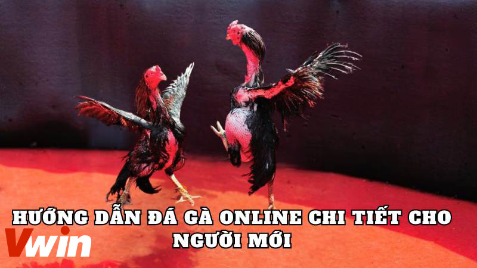
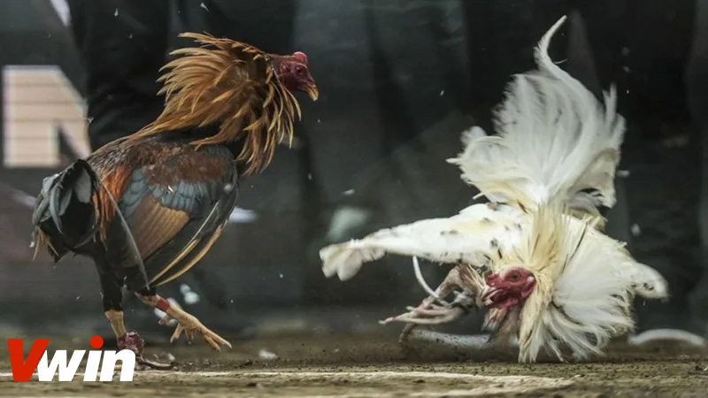

.png)
ĐÃ ĐĂNG TRÊN TRÊN THÁNG BA 7, 2024 BỞI Vwin
Trong thế giới của các loại hình cá cược, đặc biệt là bộ môn đá gà, đã trở nên quen thuộc với nhiều người chơi. Đáng chú ý là sự bùng nổ của cá cược qua mạng, thu hút người chơi bởi tính tiện lợi và tốc độ. Tuy nhiên, việc thành thạo và chuyên nghiệp trong cách chọn cược này không hề dễ dàng. Vì vậy, hôm nay Corona88 sẽ hướng dẫn đá gà online một cách chi tiết nhất. Đừng bỏ lỡ cơ hội, hãy cùng tìm hiểu ngay!
Hiện nay các nhà cái đã đưa tựa game Đá gà vào phiên bản trực tuyến thay các trận đấu cá cược Đá gà truyền thống, nơi mà người chơi thường tham gia tại các trường gà. Tại đây, họ có thể theo dõi và đặt cược vào các chiến kê mà họ tin là sẽ chiến thắng, nhận được những phần thưởng lớn hấp dẫn.
Sự thú vị của cá cược đá gà trực tuyến
Với các tựa game Đá gà này, mỗi người chơi sẽ phát triển phong cách chơi riêng và áp dụng các chiến thuật khác nhau để tìm ra những chiến kê có khả năng chiến thắng cao, từ đó đặt cược và thu được những phần thưởng hậu hĩnh. Mỗi trận đấu Đá gà đều đảm bảo mang lại sự hấp dẫn và thú vị, cùng với những phần thưởng lớn đang chờ đợi.
Việc tham gia các trò chơi Đá gà trực tuyến thuận tiện hơn rất nhiều so với việc tham gia theo cách truyền thống. Bằng cách ngồi tại nhà và truy cập vào các nhà cái, người chơi có thể dễ dàng tham gia vào các trận đấu Đá gà đến từ Việt Nam hoặc các quốc gia khác một cách nhanh chóng và tiện lợi.
Chi tiết các kiểu đặt cược đá gà
Trước khi đi vào hướng dẫn đá gà online, người chơi cần hiểu hơn về các kiểu đặt cược trong trận đấu để có thể lựa chọn cửa cược cho chiến kê mình tin cậy.
MERON là phương thức đặt cược mà người chơi đặt niềm tin vào gà của nhà cái sẽ chiến thắng. Khi chọn MERON, người chơi hy vọng rằng gà mà nhà cái đã chọn và huấn luyện sẽ vượt qua tất cả các đối thủ để giành chiến thắng. Tính đến tỷ lệ ăn thưởng, người chơi sẽ nhận được 0.95 lần số tiền đặt cược nếu gà nhà cái thực sự chiến thắng.
Với phương thức này người chơi đặt niềm tin vào gà của bên khách sẽ thắng. Người chơi sẽ đặt cược vào gà mà họ cho là có khả năng chiến thắng dù không phải là gà mà nhà cái đã chọn. Trong trường hợp này, tỷ lệ ăn thưởng là 1 đối 1, nghĩa là người chơi sẽ nhận được số tiền đặt cược bằng với số tiền họ đã đặt nếu gà của bên khách thực sự giành chiến thắng.
Phương thức đặt cược này người chơi đặt niềm tin vào tỷ số hòa giữa gà của nhà cái và gà của bên khách. Điều này có nghĩa là người chơi tin rằng không có gà nào sẽ giành chiến thắng và kết quả sẽ là một trận đấu hòa. Trong trường hợp này, tỷ lệ ăn thưởng là 1 đối 6, nghĩa là người chơi sẽ nhận được 6 lần số tiền đặt cược nếu trận đấu kết thúc với tỷ số hòa giữa hai bên.
Bạn mới bắt đầu tham gia đá gà và muốn hiểu rõ về quy trình và các bước cơ bản? Dưới đây là hướng dẫn đá gà online chi tiết và dễ hiểu để giúp bạn khám phá thế giới của đá gà trực tuyến tại sảnh game Đá Gà Vwin một cách tự tin và dễ dàng.
Đăng ký tài khoản
Bài viết trên đã cung cấp đến mọi người rất nhiều thông tin về cách thức tham gia, cũng như những hướng dẫn đá gà online, giúp bạn hiểu rõ về quy trình và các bước cơ bản để tham gia trò chơi một cách nhanh chóng và dễ dàng hơn. Hy vọng rằng những thông tin này sẽ giúp mọi người tự tin hơn khi tham gia các trận đấu đá gà hấp dẫn và thú vị, đồng thời có cơ hội nhận được nhiều phần thưởng hấp dẫn từ các trận đấu.
Vwin được công nhận là nhà cái cá cược hợp pháp - an toàn. Vwin còn có trụ sở chính và cá cược trực tiếp tại Phú Quốc.